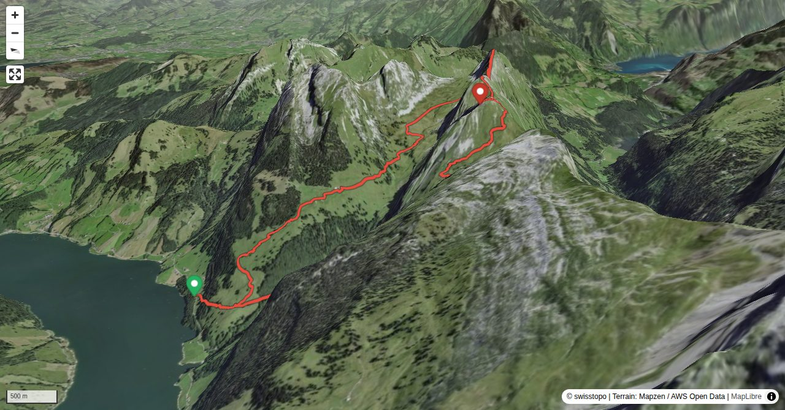

Zindlenspitz on the normal route has a marked mountain hiking trail up to the summit, which does not exceed T3. To make it somewhat more appealing for alpine hikers, we add two more summits, Brünnelistock and Rossälplispitz. This way we get a spectacular and very rewarding ridge hike which is one of the great classics of the region.
Quick Facts
| Summit elevation | 2111 m |
|---|---|
| Difficulty | SAC T5- Check the route notes below for terrain and commitment level. Guide |
| Trailhead | Wägitalersee, P. 932 |
| Distance | 11.3 km (out-and-back) |
| Total ascent | ~1423 m |
| Elevation range | 931-2110 m |
| Route sources | SAC Route Portal |
Photos


Route Map & Elevation
i
i
sac_scale (precise T1–T6) with
swissTLM3D Wanderwegart
fallback where OSM is silent (coarser T2/T3 and T4+ buckets).
Coverage: OSM 74.6% · swisstopo 20.4% · unknown 0.0%.Elevations computed from the inlined GPX track (SwissTopo height API).
Loading forecast…
3D Terrain View

Route Details
Brünnelistock, Rossälplispitz and Zindlenspitz
- P. 931 – Hohfläschenmatt 2 h 15 min Hohfläschenmatt – Brünnelistock 1 h 15 min Brünnelistock – Zindlenspitz 1 h 30 min Zindlenspitz – P. 931 2 h
Terrain & safety
Ascending to the saddle at P. 1989, there are a few narrow, slightly exposed ledges without scrambling passages. Then follows the crux of the tour: the stretch from P. 1989 on the ridge to the Brünnelistock summit, which has some exposed passages without belaying possibilities (T5–). On Rossälplispitz there are some fixed ropes; firstly on a not especially exposed passage, secondly on the rocky summit slope (T3+). On the way to Zindlenspitz there is a steep, rocky outcrop with good holds and a robust chain (T4–) plus some easy scrambling passages shortly before the summit. Apart from a short stretch above Hohfläschenmatt (in easy pastures), there are always distinct paths. Do not undertake the tour in wet conditions!
Source: SAC Route Portal
Getting There & Back
Start: Wägitalersee, P. 932 (931 m)
Directions from to Wägitalersee, P. 932
Route returns to Wägitalersee, P. 932.
Field Reference
| Trailhead | Wägitalersee, P. 932 | 47.08510, 8.93030 |
|---|---|---|
| Summit | Zindlenspitz (2111 m) | 47.07627, 8.95987 |
Coordinates are WGS84 decimal degrees (lat, lon). Emergency: 112 (general) or 1414 (Rega air rescue). Page URL: